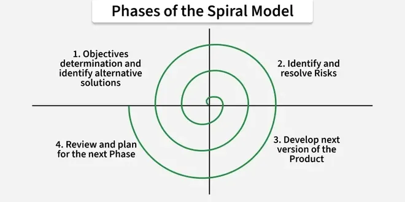
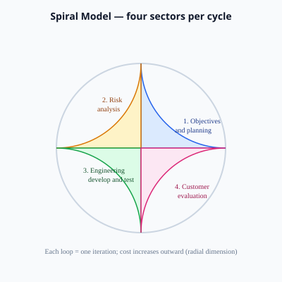

2.5 Spiral Model
The Spiral Model is a risk-driven SDLC model proposed by Barry Boehm in 1986. Unlike Classical Waterfall, which assumes risks can be ignored until late testing, the Spiral model makes risk analysis and risk reduction the organising principle of the project. Each iteration of the project is represented as one loop (cycle) of a spiral that grows outward: the team plans objectives, analyses risks, builds and tests product elements, evaluates with the customer, and then decides whether to proceed to the next, larger cycle.
The Spiral model combines ideas from other approaches: structured phases like Waterfall, prototypes to resolve uncertainty (as in §2.4), and iterative delivery of increasing completeness. It is widely cited in exams as the model best suited to large, complex, high-risk software projects.


Core idea and philosophy
Boehm observed that many failures come from unresolved risks — wrong requirements, new technology that does not scale, performance shortfalls, or staff turnover. The Spiral model forces the team to ask at every cycle: What can go wrong? How serious is it? What will we do now to reduce it? Only after risk-handling activities does the team commit to major development cost for that cycle.
- Each loop produces a more complete product (requirements slice, design, code, or operational release).
- Early loops may produce only documents and prototypes. Later loops deliver production-quality software.
- The customer is involved at the end of every cycle in evaluation, not only at project start and finish.
Four quadrants of each spiral cycle
Every revolution of the spiral is divided into four sectors (quadrants). In long answers, describe each quadrant with activities and outputs. Order matters for exams.
Quadrant 1 — Determine objectives, alternatives, and constraints
Planning for the current cycle. The team defines what this iteration must achieve, what resources are available, and what boundaries apply (budget, schedule, standards, technology choices).
- Activities. The team sets iteration goals, compares alternative solutions (for example database A versus B, or in-house hosting versus cloud), and records constraints from stakeholders and regulation.
- Outputs. This quadrant produces an iteration plan, an updated project schedule, and a clear definition of success for the current loop.
- Exam note. In an exam answer, state that this quadrant answers the question where are we going in this cycle?
Quadrant 2 — Identify and resolve risks
The distinctive quadrant of the Spiral model. Risks are identified, prioritised, and mitigated before heavy engineering. Mitigation often uses prototypes, simulations, benchmarks, or feasibility studies — linking directly to Software Prototyping (§2.4).
- Types of risk. The team considers technical risks (such as performance or security), schedule risks (such as dependency delays), cost risks (such as budget overrun), business risks (such as market change), and staffing risks (such as losing a key person).
- Activities. The team runs risk workshops, performs probability and impact analysis, builds throwaway prototypes to test the user interface, runs technical spikes to test API throughput, and arranges legal reviews for compliance where needed.
- Outputs. Typical outputs include a risk register, a risk mitigation plan, and prototypes or proof-of-concept results that reduce uncertainty.
- Exam note. If a risk cannot be reduced to an acceptable level, the project may stop or pivot early, which saves cost compared with discovering failure only at the end of a Waterfall project.
Quadrant 3 — Develop and test
Engineering work for this cycle: whatever was planned once risks are understood. May include requirements specification for a subsystem, detailed design, coding, integration, and testing.
- Activities. The team produces the deliverables agreed in quadrant 1, carries out unit, integration, and system testing, and holds technical reviews and inspections.
- Outputs. Outputs include code, design documents, test reports, and a working increment of the system for this cycle.
- Exam note. This quadrant resembles Waterfall phases, but the work is scoped to one spiral cycle, not to the entire project at once.
Quadrant 4 — Plan the next iteration
Customer evaluation and decision-making. Stakeholders review progress against objectives, approve the current increment, and plan the next loop (or terminate the project).
- Activities. The team demonstrates results to the customer, collects feedback, updates the requirements backlog, and decides the budget and scope for the next spiral.
- Outputs. This quadrant produces an evaluation report, approval to continue (or a decision to stop), and a revised plan for the next cycle.
- Exam note. This quadrant is also called customer evaluation and should be linked to stakeholder management and acceptance criteria.
Two dimensions of the Spiral model
Boehm describes progress in two dimensions. Draw the spiral and label both in exam diagrams.
- Angular dimension (horizontal rotation) — represents progress through the SDLC phases (requirements, design, implementation, testing) as the project moves around the spiral. Each full loop advances the product through more of the lifecycle. Over many cycles, the project covers the same kinds of work as Waterfall, but in slices.
- Radial dimension (outward movement) — represents cumulative cost, effort, and scope. As the spiral grows outward, more money and people are committed; the system becomes larger and more complete. Outer loops are more expensive than inner loops.
Memory aid: angular = which phase angle are we at?; radial = how big and costly is the project now?
How one full spiral cycle works (exam scenario)
- Cycle goal: prove that a new payment gateway can handle peak load for an e-commerce platform.
- Q1 — Objectives: Define success as 10,000 transactions/minute with 99.9% success rate. Budget two weeks.
- Q2 — Risks: Unknown latency from third-party API. Mitigate with load-test prototype and failover design review.
- Q3 — Develop/test: Implement integration module and run automated load tests. Fix bottlenecks.
- Q4 — Evaluation: Show results to customer. Approve next cycle for full checkout UI integration, or cancel gateway if risks remain too high.
Spiral Model vs other models
| Aspect | Waterfall | Prototype Model | Spiral Model |
|---|---|---|---|
| Main driver | Waterfall is driven by completing sequential phases in order. | The Prototype model is driven by user feedback on working prototypes. | The Spiral model is driven by explicit risk reduction in every cycle. |
| Iteration | Classical Waterfall has no iteration, or feedback only when errors are found. | Iteration continues until requirements are clear enough to build the final system. | The team runs planned cycles until the full product is complete. |
| Prototyping | Prototyping is optional and not central to Waterfall. | Prototyping is the central activity of the model. | Prototypes are used in the risk quadrant whenever uncertainty must be reduced. |
| Project size | Waterfall suits small or simple projects with stable scope. | The Prototype model suits projects with unclear requirements. | The Spiral model suits large, high-risk projects. |
| Cost of failure | In Waterfall, the cost of failure is often discovered late in the project. | Prototype models reduce the cost of wrong requirements through early evaluation. | The Spiral model reduces the cost of major risks by addressing them early in each cycle. |
Advantages of the Spiral Model
- Explicit risk management — risks are documented and addressed every cycle; suitable for safety-critical, financial, aerospace, and large enterprise systems.
- Early elimination of bad options — prototypes and studies in quadrant 2 prevent building the wrong architecture for years.
- Flexible use of prototyping — only where uncertainty exists; not every project phase needs a prototype.
- Stakeholder visibility — customer evaluation each cycle maintains alignment and funding support.
- Supports evolution — product grows incrementally around the spiral (links to §2.6 evolutionary development).
- Can absorb requirement change — objectives for the next iteration can be revised after evaluation.
Disadvantages and limitations
- High cost and overhead — risk analysis, reviews, and multiple cycles require experienced staff and time; overkill for small, routine projects.
- Depends on risk expertise — poor risk identification gives false confidence; the model fails if quadrant 2 is done superficially.
- Complex to manage — tracking many cycles, deliverables, and versions needs strong project management and configuration management.
- Contract challenges — fixed-price contracts are harder unless scope per cycle is tightly defined.
- Not a substitute for Agile speed — when the market demands weekly releases, lightweight Agile may outperform a formal Spiral.
- Documentation load — each cycle produces plans, risk logs, and test evidence; can feel heavy for small teams.
When to use the Spiral Model
- Large-scale projects with long duration and many subsystems.
- High technical risk. Examples include new algorithms, hardware integration, or untested third-party services.
- High business or safety risk. Failure is unacceptable in domains such as medical devices, air traffic control, or core banking.
- Requirements partially known. Requirements may evolve, but each spiral cycle must still be planned and reviewed.
- Organisation has maturity in risk management, reviews, and prototyping.
When NOT to use
- Small projects with well-known technology and stable requirements (Waterfall or Agile is simpler).
- No access to skilled risk analysts or architects. Quadrant 2 will be checkbox exercise only.
- Need for very fast MVP with minimal process (startup Agile/RAD).
- Customer unavailable for end-of-cycle evaluation. Quadrant 4 cannot function properly.
Real-world example
Example — National tax authority modernisation: Replace legacy mainframe with a distributed system over five years. Early spirals produce feasibility prototypes for data migration and security; risk analysis identifies legal and fraud risks. Middle spirals deliver pilot regions; outer spirals roll out nationwide. Project stops an approach after a failed prototype rather than after a failed national launch.
Link to risk management in SDLC (§2.18)
The Spiral model is the SDLC model most closely aligned with integrating risk management into every phase. Topic 2.18 generalises risk identification, mitigation, and monitoring; Spiral embeds them in every cycle’s quadrant 2.
Q: Explain the Spiral model of software development proposed by Barry Boehm. Describe the four quadrants of each cycle and the angular and radial dimensions. Compare the Spiral model with the Waterfall model. Discuss advantages, disadvantages, and suitable application areas with an example.
Model answer outline:
- Define the Spiral model (Boehm, 1986) as a risk-driven approach with iterative cycles on an expanding spiral that combines structured phases, prototyping, and customer evaluation.
- Draw the spiral with four labelled quadrants per loop and show both angular progression through phases and radial growth in cost and completeness.
- Explain quadrant 1 (objectives, alternatives, and constraints), quadrant 2 (identify and resolve risks using prototypes or simulations), quadrant 3 (develop and test), and quadrant 4 (customer evaluation and planning the next iteration).
- Walk through one complete cycle, such as validating a payment gateway under peak load.
- Contrast with Waterfall by noting explicit risk handling each cycle versus late risk discovery in a single pass.
- Discuss advantages, disadvantages, suitable projects, and link to integrated risk management in §2.18.
MCQ (GFG style): The Spiral model was proposed by — (B) Barry Boehm.
MCQ: Risk analysis in the Spiral model is performed in — (B) Every cycle (quadrant 2).